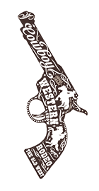

Alphonse Gabriel Capone (January 17, 1899 – January 25, 1947), sometimes known by the nicknames "Scarface" and "Snorky", was an American gangster and businessman who attained notoriety during the Prohibition era as the co-founder and boss of the Chicago Outfit from 1925 to 1931. His seven-year reign as a crime boss ended when he went to prison at the age of 33.